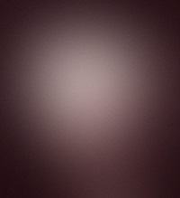

About
 Madison Jones is a PhD candidate in rhetoric and writing studies at the University of Florida. His research explores the role of place and environment in networked writing. He teaches courses in digital rhetoric, composition, and professional writing. His scholarship and teaching intersect the fields of ecocomposition, creative writing studies, advocacy, and digital rhetoric.
| Writing Studies | Rhetoric | Professional Writing |
|---|---|---|
| Ecocomposition | Digital & Visual | Public Advocacy |
| Place & Locative Writing | Circulation Studies | Instructional Design |
| Multimodal Composition | Digital Storytelling | Podcasting & Augmented Reality |
| Creative Writing Studies | Science & Technology Studies | Editing, Coding, & Design |
Research
Recent articles, reviews, webtexts, and other digital projects.
"EcoTour": A Walking Tour Funded by UF's Healthy Civic, Community, and Campus Grant
"Review of Melissa Lane's Ecorepublic in Journal of Ecocriticism (8.1) 2018.
“Augmented Vélorutionaries: Digital Rhetoric, Memorials, and Public Discourse” (with Jacob Green) in Kairos: A Journal of Rhetoric, Technology, and Pedagogy (22.1) August 2017.
"Environing Media: A Review of Nicole Starosielski’s The Undersea Network" in Digital Humanities Quarterly (11.3) 2018.
Teaching
Teaching Portfolio
Recent materials for courses I've designed, including syllabi, assignments, and links to course websites.
Curriculum Vitae
Check out a brief overview of my academic work, or download the full CV.
Download CVEDUCATION & APPOINTMENTS
Ph.D. in Rhetoric and Writing Studies, University of Florida (Expected May 2019)
Committee: Sidney I. Dobrin (Chair), Raúl Sánchez, Anastasia Ulanowicz, Robert Walker (Geography)
Dissertation: Writing, Place, Network
M.A. in English Auburn University (2014)
B.A. in English, University of Montevallo (2010)
Academic Appointments
Graduate School Teaching and Research Fellow, University of Florida (2015-19)
Instructor of English, Point University (2014-2015).
Graduate Teaching Assistant, Auburn University (2012-14).
SCHOLARLY PUBLICATIONS
Edited Collections
Articles
“Sylvan Rhetorics: Roots and Branches of More-Than-Human Publics.” Rhetoric Review, January 2019, vol. 38 no. 1, [Forthcoming].
Book Chapters
“(Re)placing Scale: Mapping Flyover and Ground Truth” in Mediating Nature: The Role of Technology in Ecological Literacy. Eds. Sidney I. Dobrin and Sean Morey. Routledge, (Accepted, Expected Fall 2019).
Essays and Reviews
“Review of Rhetoric as a Posthuman Practice” by Casey Boyle. Ohio State UP, 2018. Reviewed in Composition Forum, Spring 2019, vol. 40, no. 1, Web [Forthcoming].
Beyond Romantic Ecocriticism: Toward Urbanatural Roosting by Ashton Nichols. New York: Palgrave Macmillan, 2011. Reviewed in Southern Humanities Review (Spring 2013) 47 (2): 190-192.
Wilderness into Civilized Shapes: Reading the Postcolonial Environment by Laura Wright. Athens: U of Georgia P, 2010. Reviewed in Interdisciplinary Studies in Literature and Environment. Oxford UP (Autumn 2011) 18 (4): 893-4.
Electronic Media Projects
Consultant, “Augmenting Sustainability on the UF Campus.” Classroom project for Leslie Paul Thiele, University of Florida (2019) [Forthcoming].
Developer, “Aurasma Augmented Reality Tutorial.” Marston Science Library LibGuides Tutorial (Fall 2017), http://guides.uflib.ufl.edu/msltech/augmentedreality.
TEACHING EXPERIENCE
Graduate Teaching Assistant, University of Florida, Gainesville, Florida (2016-2019)
Upper Division
Posthuman Writing: Advanced Argumentation (Summer 2018).
Digital Rhetoric: Advanced Exposition (Spring 2018).
Lower Division
Technical Writing (Summer 2017).
Writing about Invention (Spring 2017).
Visualizing Environments: Writing through Media (Fall 2016 and Fall 2017).
English Instructor, Point University, West Point, Georgia (2014 to 2015)
Upper Division
English 264, Advanced English, Poetry Writing Workshop: designed and taught one section, spring 2015.
Lower Division
English 102, Critical Reading and Writing II: designed and taught three sections, spring 2015.
English 101, Critical Reading and Writing I: designed and taught four sections fall 2014; one section spring 2015.
Graduate Teaching Assistant, Auburn University, Auburn, Alabama (2012 to 2014)
Teacher of Record (Designed and Taught)
English 1120, Composition II, two "Sustainability" themed sections spring 2014, one open-themed section spring 2015.
English 1100, Composition I, one section fall 2013.
GRANTS & AWARDS
Grants
University of Florida Graduate School Doctoral Research Travel Grant: $5200. Athens, Greece for Carrying Owls to Athens: Deep Mapping Platonic Environments (Fall 2017).
The Bob Graham Center for Public Service at the University of Florida’s Healthy Civic Campus & Community Grant: $3,100 (With Shannon Butts, Jacob Greene, Jason Crider, and Kenneth Anderson) for Ecotour: Using Mobile Technologies to Promote Local Environmental Engagement, Fall 2017.
Association for the Study of Literature and Environment’s Subvention Grant: $2,000 (with Jacob Greene) for Articulate Detroit: Visualizing Environments, a mobile augmented reality walking tour showcased at ASLE’s 12th biennial conference, Spring 2017.
Awards (Selected)
University of Florida Department of English Graduate Teaching Award (Spring 2018).
Auburn University Department of English Graduate Teaching Award (Spring 2014).
PRESENTATIONS
Invited Campus Talks
“Augmented Reality and Digital Activism” University of North Florida (Fall 2017).
"Southern Ecopoetics and Digital Publishing," MFA Seminar on Ecopoetry and Ecopoetics at Texas State University (via Skype). Teacher of Record: Dr. Cecily Parks. Fall 2015.
“Succeeding as an English Major.” English 300, Introduction to the Major. Teacher of Record: Dr. Jim Murphy, University of Montevallo, spring 2015.
National Conferences
“Reinventing Place in an Era of Climate Change.” Rhetoric Society of America Conference. Minneapolis, MN (May 2018).
“EcoTour: Digital Rhetoric and Local Spaces.” Rhetoric Society of America Conference. Minneapolis, MN (May 2018).
“(Re)Placing Scale.” Conference on College Composition and Communication. Kansas City, MI (April 2018).
“Articulating Detroit: Visualizing Environments (ASLE Subvention-Grant walking tour).” Association for the Study of Literature and Environment Conference. Detroit, MI (June 2017).
“Writing Place, or How to Kayak in an Ocean.” Association for the Study of Literature and Environment Conference. Detroit, MI (June 2017).
“Ekphrastic Media: Visualizing Advocacy in the Writing Classroom.” National Council of Teachers of English Annual Convention. Atlanta, GA (November 2016).
“Digital Materiality: Petrocentrism and Public Advocacy Rhetorics.” UC Santa Barbara Environmental Humanities Initiative’s Conference. Online (October to November 2016).
“Plato’s Apocalyptic Rhetoric: Regional Ecology in the Critias-Timaeus Dialogues.” Rhetoric Society of America Conference. Atlanta, GA (May 2016).
“Ecolectracy: Deconstructing Pedagogical Binaries of Digital and Natural Environments” Rhetoric Society of America Conference. Atlanta, GA (May 2016).
Download the complete CV as a PDF.
References available upon request.
Poetry
A selection of published poems available online or as a .pdf.

“Pastoral” in Crab Orchard Review. Vol. 23, No. 2, Fall 2018. Online
"Anthropocene" and "Self-Portrait in a Broken Mirror" in The Forth River Spring 2016.
“The Bicycle” in Painted Bride Quarterly. Iss. 90 Fall 2014.
"Bon Voyage" in Valparaiso Poetry Review Vol. 20, No. 1, Fall/Winter 2018.
Reflections on the Dark Water (poetry collection) Solomon & George, 2016.
"A Prayer for Lethe" in Tampa Review Vol. 45/46 Fall 2013.
"Blackberry" and "Nocturne" in Michigan Quarterly Review 56(4) Fall 2017.